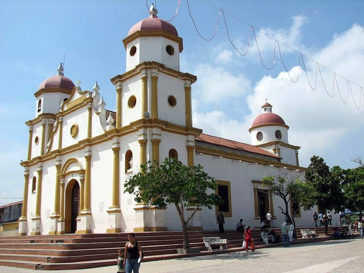

Iglesia San Antonio de Padua
Un espacio religioso y patrimonial representativo de la comunidad soledeña.
Conocer su historia
Fundada a principios del siglo XVII (aproximadamente en 1610) y elevada a parroquia en 1743, esta edificación es el templo colonial en pie más antiguo del departamento del Atlántico y destaca por su arquitectura de estilo barroco y constructiva de la época basada en cal y canto, albergando una enorme importancia para la comunidad al ser considerada un Monumento Nacional y el epicentro de la fe, la identidad y las festividades patronales de los soledeños.